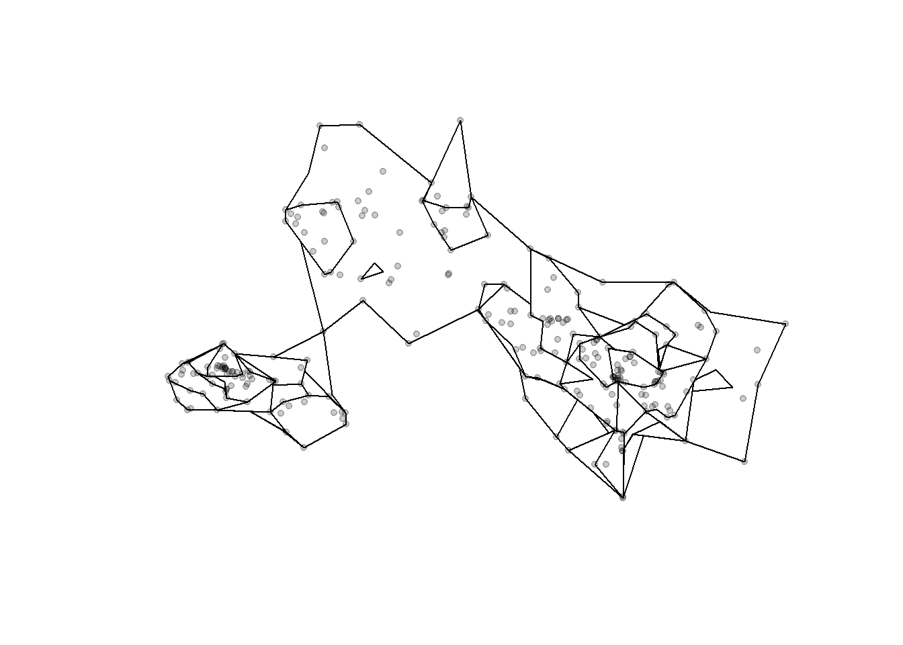
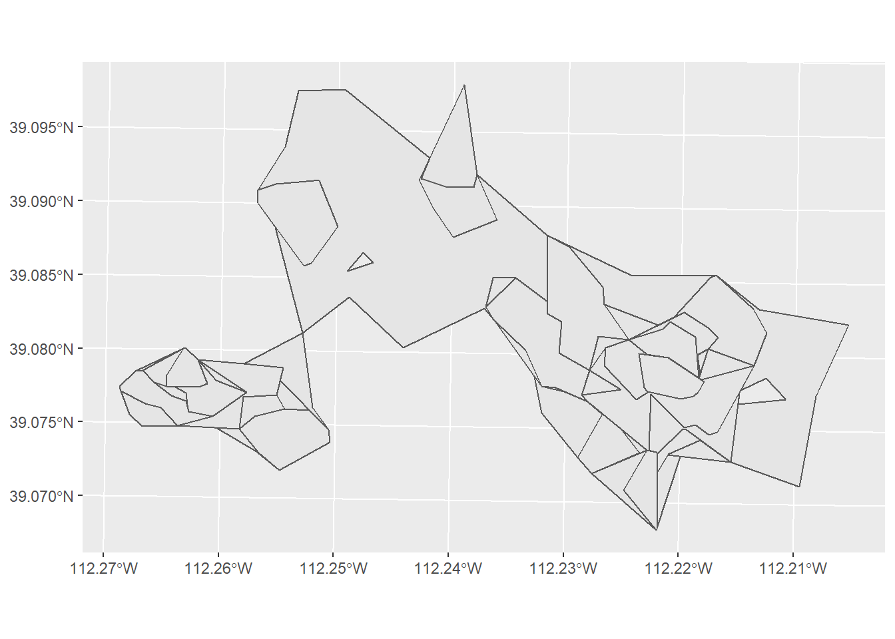
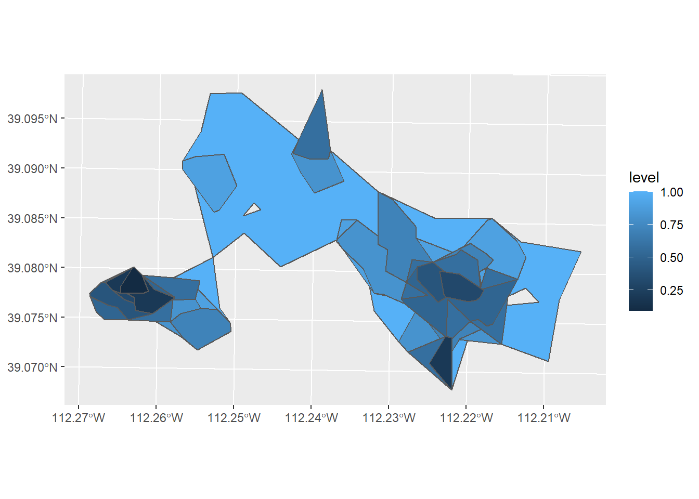
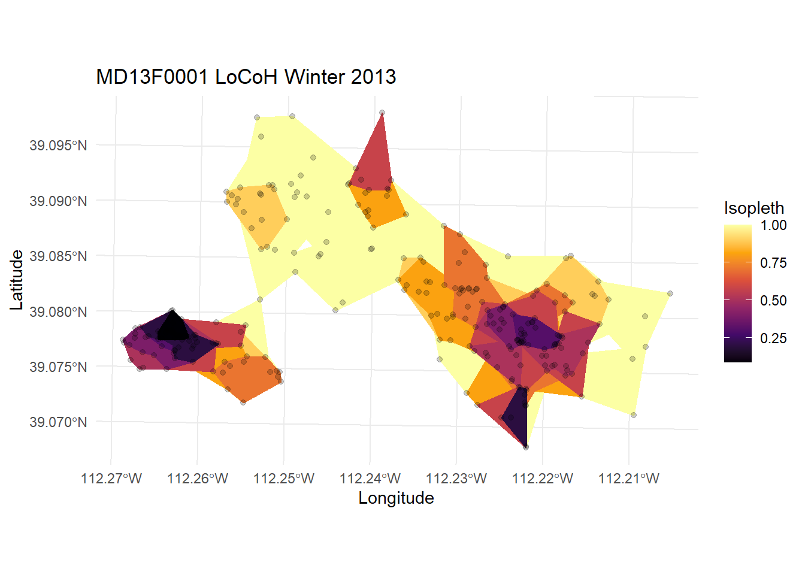
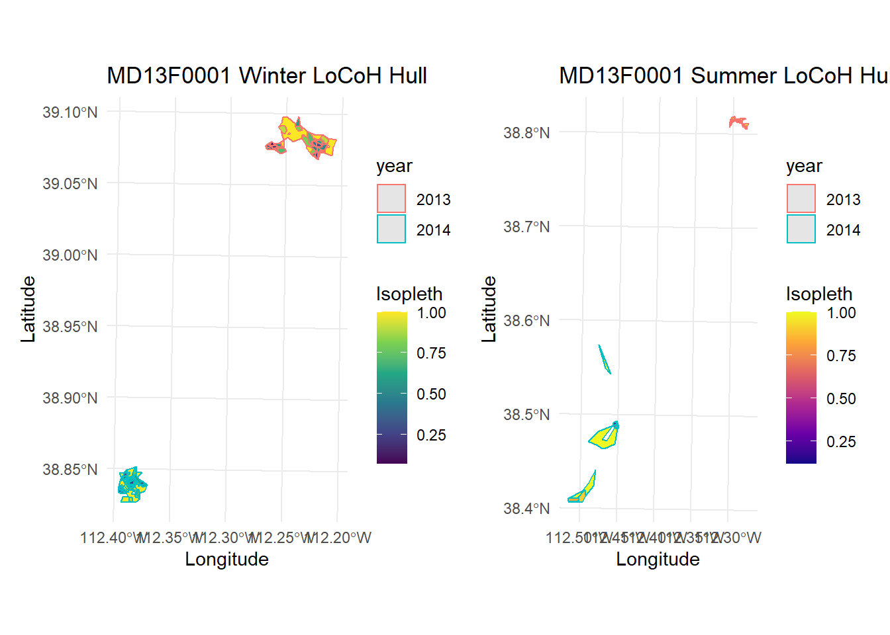
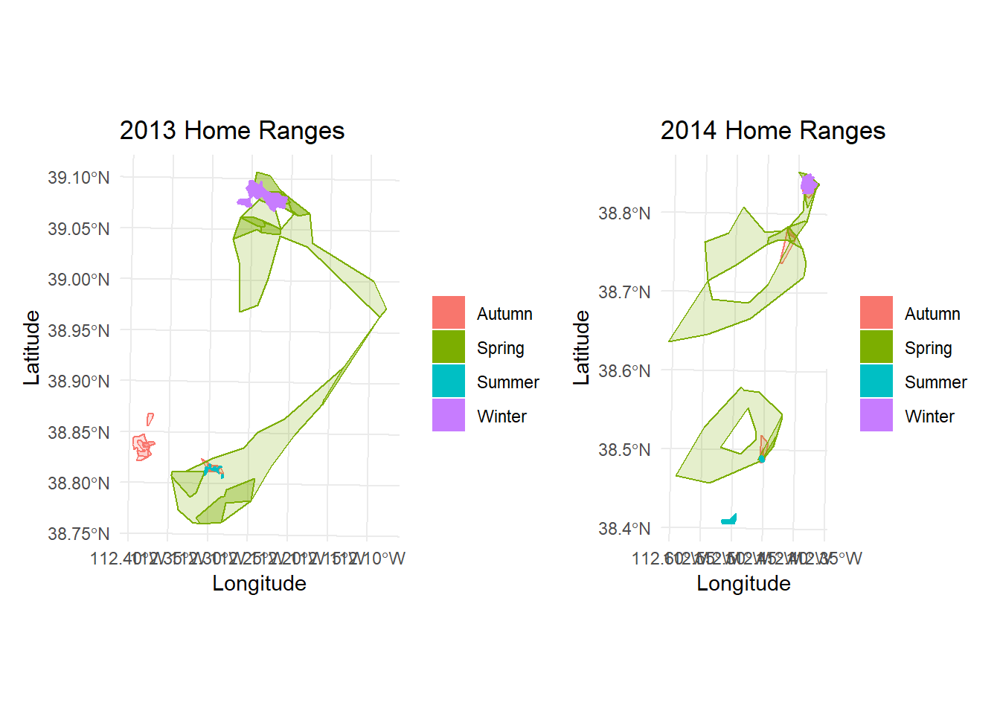
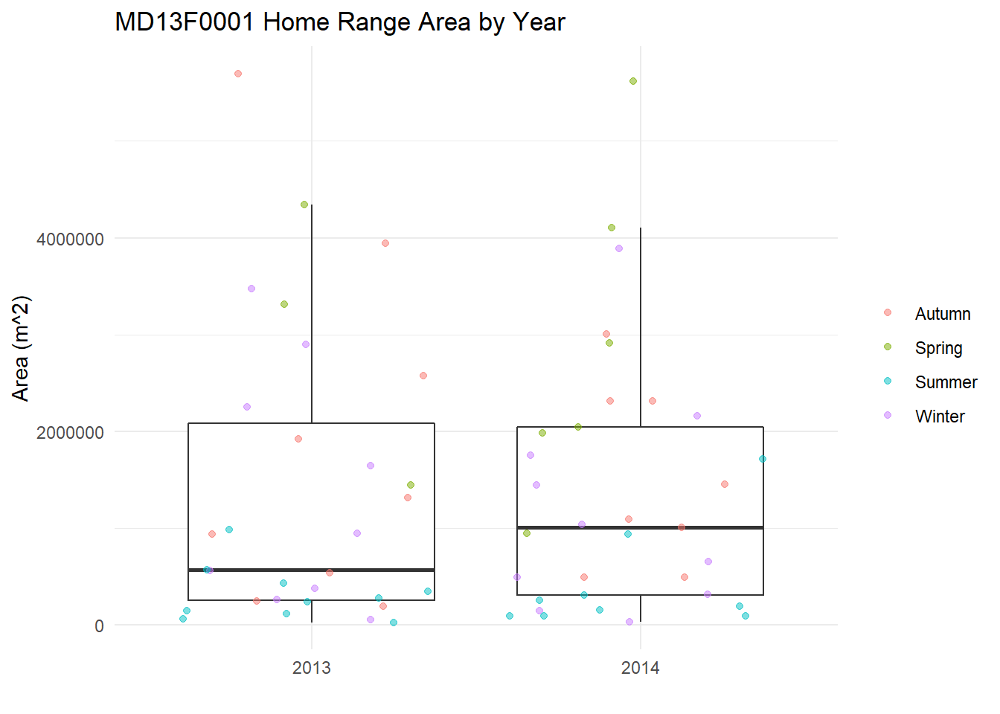
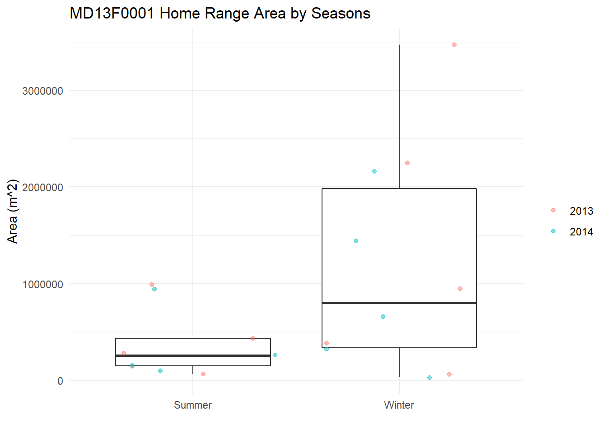
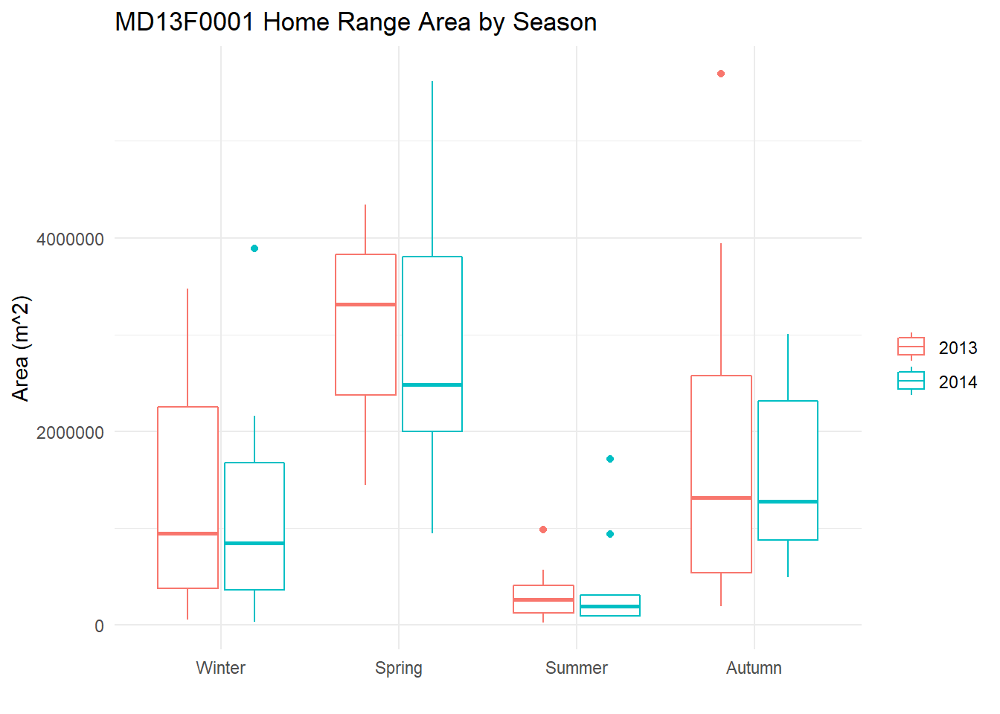

Chapter 4 Home Range Visualization
4.1 LoCoH Home Ranges
A home range is defined as “the area an animal normally travels” (Burt, 1943), or a spatially bounded pattern of an individual’s space-use process. A home range is not necessarily the same inter- or intra-annually – this is especially true for migrants or partial-migrants. Because a home range is dependent on temporal scales, I will need to delineate home ranges of a specific season within a specifc year, as this home range is likely to change by the next season or year. To estimate home ranges, I need to generate a utilization distribution (UD) – the probability density distribution of animal occurrence in a two-dimensional space – which is bounded by a specific contour aka isopleth.
4.1.1 Research Questions
- How does an animal’s home range shape change with the presence of linear features (roads or fences)?
- How does an animal’s home range area change with barrier density?
LoCoH – or Local Convex Hull – differs from other home range UDs in that it shows gaps and sharp boundaries of the animal’s movement. This is useful for my research because I can see if the home range shape is affected by linear features – such as if it runs parallel to a barrier.
Burt, W.H. (1943). Territoriality and home range concepts as applied
to mammals. J. Mammal., 24, 346.
4.1.2 Objectives
My objective for this code is to delineate and plot the LoCoH home range for every season of every year for every individual. I also want to plot a boxplot of the estimated areas of that year’s home ranges.
4.2 Set Up
For this task, I’ll be using a lot of packages. I’ll use dplyr to pipe and organize the dataframes, but since I’ll also use ggplot2, I will just go ahead and use the whole tidyverse package. I’ll also use lubridate to help deal with year formatting. To deal with simple features and spatial data, I’ll use the packages sf and sp. To help make my plots look nice, I’ll use the packages patchwork and viridis. And, finally, to deal with steps and home ranges, I’ll use the package amt.
install.packages("tidyverse")
install.packages("lubridate")
install.packages("amt")
install.packages("sp")
install.packages("sf")
install.packages("patchwork")
install.packages("viridis")library(tidyverse)
library(lubridate)
library(amt)
library(sp)
library(sf)
library(patchwork)
library(viridis)in_dir <- "Data/GPS/Processed/Individuals/"
out_dir <- "Analysis/Output/LoCoH/"
# Check if the output directory exists or not
if (!dir.exists(out_dir)) {
dir.create(out_dir, recursive = TRUE)
} ani_fn <- list.files(path = in_dir, full.names = TRUE)[1]iso_levels <- seq(0.1, 1, by = 0.1)
locoh_type <- "a"Based on previous research on migratory or partially migratory pronghorn and mule deer in Utah, I can be reasonably certain of the times when these animals would be in their summer and winter ranges and when they would be in their spring and autumn migrations.
| Season | Dates |
|---|---|
| Summer | July 1 - September 30 |
| Winter | January 1 - March 31 |
| - | - |
| Spring | April 1 - June 30 |
| Autumn | October 1 - December 31 |
winter <- c(1, 2, 3)
spring <- c(4, 5, 6)
summer <- c(7, 8, 9)
autumn <- c(10, 11, 12)4.3 LoCoH Home Range for One Season
4.3.1 Delineate Seasonal LoCoH Hull
First I need to read in the rds data into a data frame. I only need the animal ID, the date and time stamp, and utm x and y positions. To be safe, I’m also going to sort the datetime column. Then, for ease, I’ll add a column of the year and the season of that position.
animal_df <- readRDS(ani_fn) %>%
dplyr::select(animal_id, datetime, utm_x, utm_y) %>%
as_tibble() %>%
# sort by earliest to latest datetime
arrange(datetime) %>%
# make a column for year and season
mutate(
yr = year(datetime),
ssn = case_when(month(datetime) %in% winter ~ "Winter",
month(datetime) %in% spring ~ "Spring",
month(datetime) %in% summer ~ "Summer",
month(datetime) %in% autumn ~ "Autumn"))Let’s see how many years this individual was tracked
print(unique(animal_df$yr))## [1] 2013 2014Let’s just work with 2013 data for now, so let’s filter the animal_df dataframe.
ani_yr <- animal_df %>%
filter(yr == 2013)Let’s see how many seasons this individual was tracked in 2013
print(unique(ani_yr$ssn))## [1] "Winter" "Spring" "Summer" "Autumn"Let’s just work with Winter data for now, so let’s filter the ani_yr dataframe.
ani_ssn <- ani_yr %>%
filter(ssn == "Winter")Now that I have a dataframe of just one season in one year for one individual, I can delineate this season’s LoCoH hull. I’ll use the make_track function from the amt package to make a track of all the individual’s steps of this season, and then the function hr_locoh to delineate the LoCoH hulls with the isopleth levels I specified earlier.
# make the track
track <- ani_ssn %>%
make_track(utm_x, utm_y, datetime, animal_id,
# EPSG:32612 = WGS 84 / UTM zone 12N
crs = CRS("+init=epsg:32612"))
# calculate the max distance between points for parameter "n"
max_dist <- track[, c("x_", "y_")] %>%
dist() %>%
max()
# delineate the locoh home range for the given season
locoh_ssn <- track %>%
hr_locoh(levels = iso_levels,
keep.data = TRUE,
n = max_dist,
type = locoh_type,
rand_buffer = 1e-05)4.3.2 Plot Home Range
Now that I have the LoCoH hull of this season, I can plot it and save the plot and data.
plot(locoh_ssn)
Let’s try in ggplot. First I have to turn locoh_ssn into an sf object using the function hr_isopleths in amt.
locoh_ssn %>%
hr_isopleths() %>%
ggplot() +
geom_sf()
But right now, the isopleth levels are from small to large, so the largest isopleth are stacked on top and I can’t see the smaller ones. So first I have to re-arrange the levels.
locoh_ssn %>%
hr_isopleths() %>%
arrange(desc(level)) %>%
ggplot() +
geom_sf()
Great! But I can’t tell which isopleth is which
locoh_ssn %>%
hr_isopleths() %>%
arrange(desc(level)) %>%
ggplot() +
geom_sf(aes(fill = level))
The darker colors are of the smaller isopleths, showing the areas where the animal spent the majority of their time in this season.
This plot is fine, but let’s pretty it up a little. I’m going to remove the outlines of the isopleths, change the theme, add labels for the axes, legend, and title, and change the color scheme to viridis.
ani_name <- unique(animal_df$animal_id)
locoh_ssn %>%
hr_isopleths() %>%
arrange(desc(level)) %>%
ggplot() +
geom_sf(aes(fill = level, color = level)) +
theme_minimal() +
labs(x = "Longitude", y = "Latitude",
title = paste(ani_name, "LoCoH Winter 2013"),
fill = "Isopleth", color = "Isopleth") +
scale_color_viridis_c(aesthetics = c("color", "fill"),
option = "inferno")I can also add the animal’s original position points
locoh_ssn %>%
hr_isopleths() %>%
arrange(desc(level)) %>%
ggplot() +
geom_sf(aes(fill = level, color = level)) +
theme_minimal() +
labs(x = "Longitude", y = "Latitude",
title = paste(ani_name, "LoCoH Winter 2013"),
fill = "Isopleth", color = "Isopleth") +
scale_color_viridis_c(aesthetics = c("color", "fill"),
option = "inferno") +
geom_point(data = locoh_ssn$data,
mapping = aes(x = x_, y = y_),
alpha = 0.2)
Looks great! Let’s save this plot in an output figure’s folder.
plot_fn <- paste0(ani_name, "2013_winter.tiff")
ggsave(plot_fn, path = out_dir)4.4 LoCoH Home Range for all seasons in all years
However, it’s not very useful to copy and paste this code for every season of every year for this individual, and becomes even more tedious when I introduce this for more than one individual. In my real data, I have 3901 individuals, so it would make more sense to loop over all of these functions using lapply.
Here’s all of the functions I went through above but now in nested loops
# load and format individual's data frame
animal_df <- readRDS(ani_fn) %>%
dplyr::select(animal_id, datetime, utm_x, utm_y) %>%
as_tibble() %>%
arrange(datetime) %>%
mutate(
yr = year(datetime),
ssn = case_when(month(datetime) %in% winter ~ "Winter",
month(datetime) %in% spring ~ "Spring",
month(datetime) %in% summer ~ "Summer",
month(datetime) %in% autumn ~ "Autumn"))
# make a vector for the unique years
years <- unique(animal_df$yr)
# Loop through every year for this individual
# (returns a list of locoh for all years with all seasons of those years)
locoh <- lapply(1:length(years), function(y){
# filter by year
ani_yr <- animal_df %>%
filter(yr == years[y])
# make a vector for the unique seasons of that year
seasons <- unique(ani_yr$ssn)
# Loop through every seasons for that year
# (returns a list of locoh for all the seasons of that year)
locoh_yr <- lapply(1:length(seasons), function(s){
# filter by season
ani_ssn <- ani_yr %>%
filter(ssn == seasons[s])
# delineate the locoh home range for the given season
# make the track
track <- ani_ssn %>%
make_track(utm_x, utm_y, datetime, animal_id,
# EPSG:32612 = WGS 84 / UTM zone 12N
crs = CRS("+init=epsg:32612"))
# calculate the max distance between points for parameter "n"
max_dist <- track[, c("x_", "y_")] %>%
dist() %>%
max()
locoh_ssn <- track %>%
hr_locoh(levels = iso_levels,
keep.data = TRUE,
n = max_dist,
type = locoh_type,
rand_buffer = 1e-05)
return(locoh_ssn)
})
# name the elements of this list after the seaons of that year
names(locoh_yr) <- seasons
return(locoh_yr)
})
# name the elements of this list after the years for this individual
names(locoh) <- yearsNow, I have a large list of every LoCoH home range of this individual, named with its corresponding season and year. I can access this data by indexing, such as locoh[[1]][[3]] or using the names of each list, such as locoh$2013$"Summer". Or I can use lapply again to get all seasons of all years into one dataframe.
years <- names(locoh)
hr_sf <- lapply(1:length(locoh), function(y){
hr_yr <- lapply(1:length(locoh[[y]]), function(s){
seasons <- names(locoh[[y]])
hr <- locoh[[y]][[s]] %>%
hr_isopleths() %>%
arrange(desc(level)) %>%
mutate(
year = years[y],
season = seasons[s])
return(hr)
}) %>%
bind_rows()
}) %>%
bind_rows()I can use this to plot all the seasonal LoCoH hulls of a single year together.
winter_2013 <- hr_sf %>%
filter(year == 2013 & season == "Winter") %>%
ggplot(aes(fill = level, color = level)) +
geom_sf() +
theme_minimal() +
labs(x = "Longitude", y = "Latitude",
title = "Winter 2013",
fill = "Isopleth", color = "Isopleth") +
scale_color_viridis_c(aesthetics = c("color", "fill"))
summer_2013 <- hr_sf %>%
filter(year == 2013 & season == "Summer") %>%
ggplot(aes(fill = level, color = level)) +
geom_sf() +
theme_minimal() +
labs(x = "Longitude", y = "Latitude",
title = "Summer 2013",
fill = "Isopleth", color = "Isopleth") +
scale_color_viridis_c(aesthetics = c("color", "fill"),
option = "inferno")
spring_2013 <- hr_sf %>%
filter(year == 2013 & season == "Spring") %>%
ggplot(aes(fill = level, color = level)) +
geom_sf() +
theme_minimal() +
labs(x = "Longitude", y = "Latitude",
title = "Spring 2013",
fill = "Isopleth", color = "Isopleth") +
scale_color_viridis_c(aesthetics = c("color", "fill"),
option = "plasma")
autumn_2013 <- hr_sf %>%
filter(year == 2013 & season == "Autumn") %>%
ggplot(aes(fill = level, color = level)) +
geom_sf() +
theme_minimal() +
labs(x = "Longitude", y = "Latitude",
title = "Autumn 2013",
fill = "Isopleth", color = "Isopleth") +
scale_color_viridis_c(aesthetics = c("color", "fill"),
option = "magma")
(winter_2013 | summer_2013) /(spring_2013 | autumn_2013)
winter_plot <- hr_sf %>%
filter(season == "Winter") %>%
ggplot(aes(fill = level, color = year)) +
geom_sf() +
scale_fill_viridis_c() +
theme_minimal() +
labs(x = "Longitude", y = "Latitude",
title = "MD13F0001 Winter LoCoH Hull",
fill = "Isopleth")
summer_plot <- hr_sf %>%
filter(season == "Summer") %>%
ggplot(aes(fill = level, color = year)) +
geom_sf() +
scale_fill_viridis_c(option = "plasma") +
theme_minimal() +
labs(x = "Longitude", y = "Latitude",
title = "MD13F0001 Summer LoCoH Hull",
fill = "Isopleth")
winter_plot | summer_plot
season_2013 <- hr_sf %>%
filter(year == 2013 &
season == c("Winter", "Summer"))
transition_2013 <- hr_sf %>%
filter(year == 2013 &
season == c("Spring", "Autumn"))
season_2014 <- hr_sf %>%
filter(year == 2014 &
season == c("Winter", "Summer"))
transition_2014 <- hr_sf %>%
filter(year == 2014 &
season == c("Spring", "Autumn"))
p_2013 <- ggplot() +
geom_sf(data = transition_2013,
mapping = aes(fill = season, color = season),
alpha = 0.2) +
geom_sf(data = season_2013,
mapping = aes(fill = season, color = season)) +
theme_minimal() +
labs(x = "Longitude", y = "Latitude",
title = "2013 Home Ranges",
fill = "", color = "")
p_2014 <- ggplot() +
geom_sf(data = transition_2014,
mapping = aes(fill = season, color = season),
alpha = 0.2) +
geom_sf(data = season_2014,
mapping = aes(fill = season, color = season)) +
theme_minimal() +
labs(x = "Longitude", y = "Latitude",
title = "2014 Home Ranges",
fill = "", color = "")
p_2013 | p_2014
4.4.1 Home Range Area
I can use a similar approach to make a data frame of areas of the home ranges using the function hr_area.
hr_area <- lapply(1:length(locoh), function(y){
hr_yr <- lapply(1:length(locoh[[y]]), function(s){
seasons <- names(locoh[[y]])
hr <- locoh[[y]][[s]] %>%
hr_area() %>%
mutate(
year = years[y],
season = seasons[s])
return(hr)
}) %>%
bind_rows()
}) %>%
bind_rows()How does total home range area differ by year?
hr_area %>%
filter(area < quantile(hr_area$area, .8)) %>%
ggplot(aes(x = year, y = area)) +
geom_boxplot(outlier.shape = NA) +
geom_jitter(aes(color = season), alpha = 0.5) +
labs(x = "", y = "Area (m^2)", color = "",
title = "MD13F0001 Home Range Area by Year") +
theme_minimal()
How does total summer area compare with total winter area?
hr_area %>%
filter(area < quantile(hr_area$area, .8) &
season == c("Winter", "Summer")) %>%
ggplot(aes(x = season, y = area)) +
geom_boxplot(outlier.shape = NA) +
geom_jitter(aes(color = year), alpha = 0.5) +
labs(x = "", y = "Area (m^2)", color = "",
title = "MD13F0001 Home Range Area by Seasons") +
theme_minimal()
How do the seasonal areas change by year?
hr_area %>%
filter(area < quantile(hr_area$area, .8)) %>%
ggplot(aes(x = factor(season,
levels = c("Winter", "Spring", "Summer", "Autumn")), y = area,
color = year)) +
geom_boxplot() +
labs(x = "", y = "Area (m^2)", color = "",
title = "MD13F0001 Home Range Area by Season") +
theme_minimal()